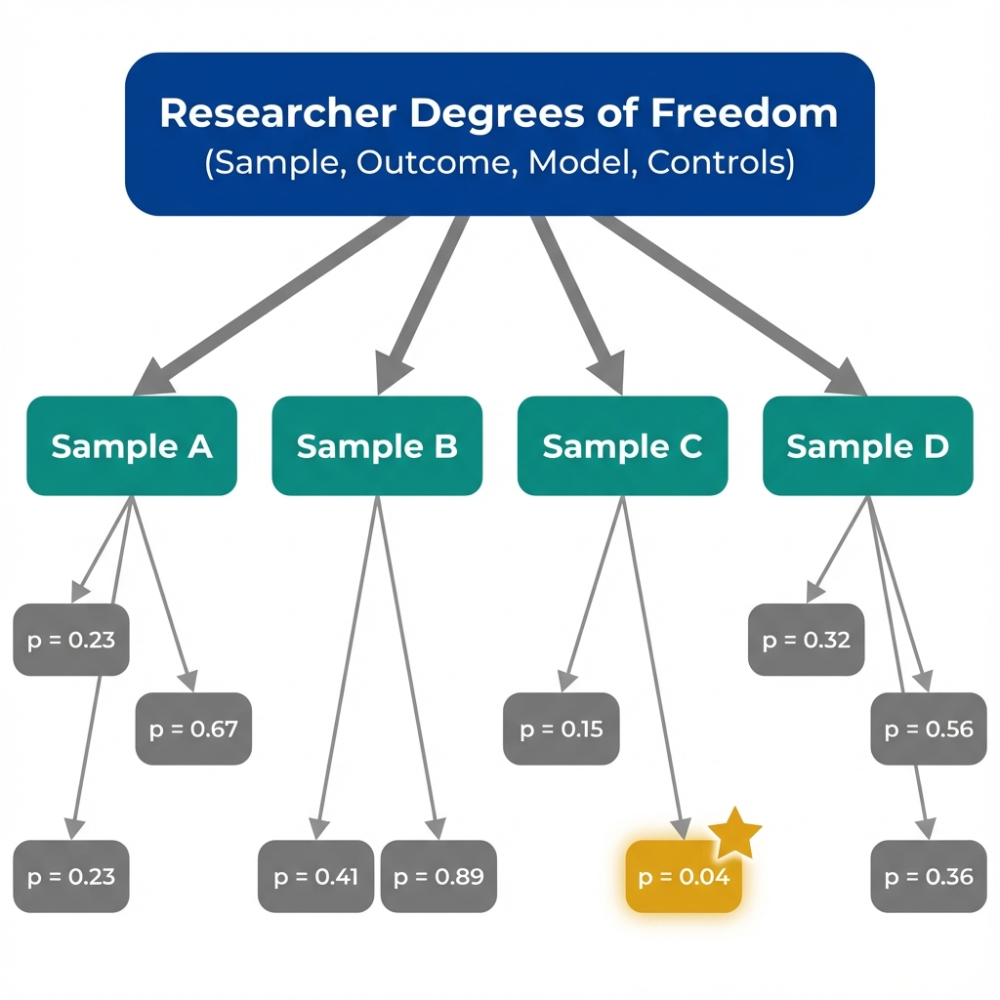

The Data
Imagine 100 researchers each testing whether a new health intervention works. In reality, the intervention has no effect. How many researchers will still find a "significant" result at p < 0.05? (Data are simulated for illustration.)
Distribution of P-Values (100 Studies, No True Effect)
This is the false positive rate in action.
With a p-value threshold of 0.05, roughly 5% of null effects will appear significant. What happens when researchers run many tests on the same data?
The Problem
Reporting significant findings without revealing the analytic path hides how fragile the results might be.

Multiple testing paths increase the chance of finding at least one "significant" result by chance.
Researchers have many choices when analyzing data.
Each choice creates a potential specification. What if we saw all the specifications, not just the one that was published?
Specification Curve
A specification curve shows results from many reasonable analytic choices. If only a few specifications produce significance while most do not, the finding may be fragile.
Transparent research shows all reasonable specifications.
What warning signs should you look for when reading a study that reports only one specification?
Red Flags
These patterns suggest that specification searching or selective reporting may have inflated the reported results. None prove wrongdoing, but each warrants scrutiny.
What Is P-Hacking?
P-hacking refers to practices that artificially inflate the chance of finding a statistically significant result:
- Testing many outcome variables, but reporting only the significant ones
- Trying different subgroups until one shows an effect
- Adding or removing control variables to change significance
- Stopping data collection when p drops below 0.05
The result looks like evidence, but it's really the product of searching through noise until something appeared significant by chance.
P-values just below 0.05
A suspicious clustering of p-values at 0.04, 0.03, or 0.049 suggests results were nudged across the threshold.
Unexplained subgroup analysis
Results are significant only in certain subgroups with no pre-specified hypothesis for why.
Flexible outcome definitions
The outcome measure differs from what was pre-registered, or multiple outcomes are tested with only one reported.
No pre-registration or protocol
Without a public record of the planned analysis, there's no way to tell if the reported approach was chosen after seeing the data.
Inconsistent control variables
Different specifications use different controls without clear justification, suggesting selection based on results.
Large effect from small sample
Surprisingly large effects in underpowered studies suggest the "winner's curse" from selecting the most impressive result.
Skepticism is healthy, but so is understanding the fix.
What practices help researchers avoid these problems? What should you look for as evidence of credible research?
Key Insight
Understanding multiple testing helps you evaluate research credibility. These concepts distinguish robust findings from statistical artifacts.
Was the analysis pre-registered?
Pre-registration commits researchers to a specific analysis plan before seeing the data, preventing post-hoc specification searching.
Are all specifications shown?
Transparent studies present specification curves or robustness checks showing results across reasonable analytic choices.
Is the effect consistent?
Robust findings appear across multiple specifications, samples, and outcome measures. Fragile findings depend on specific choices.
Does the sample size support the effect?
Large effects from small samples are suspicious. Credible studies have adequate power for the claimed effect size.
Concepts Demonstrated in This Lab
Key Takeaway
A single significant p-value tells you little without knowing the research process. When researchers have many choices about samples, outcomes, and models, the chance of finding at least one "significant" result by chance is high. The solution isn't avoiding statistics; it's demanding transparency about how many tests were run and showing results across all reasonable specifications. This is what economists mean by "robustness."